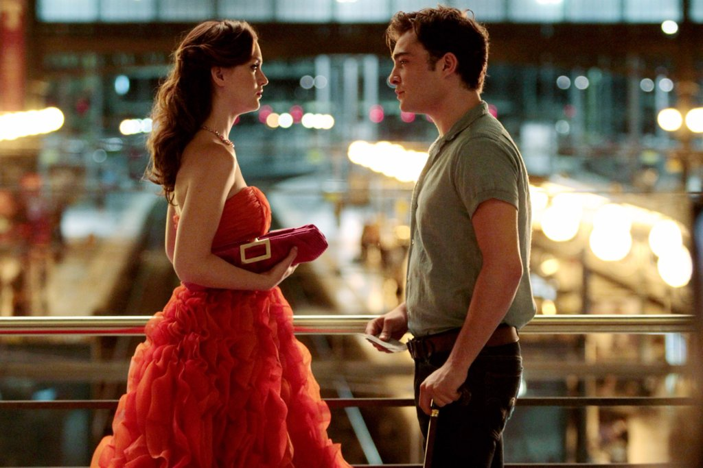
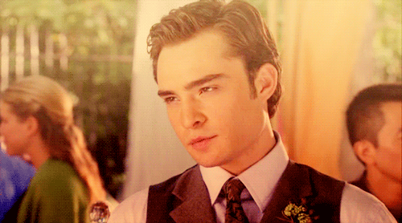
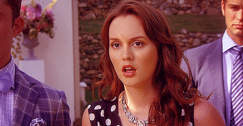
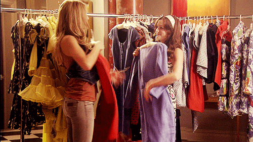
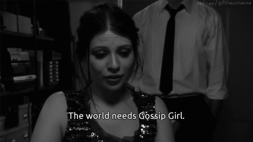

Gossip Girl is an American teen drama television series based on the book series of the same name written by Cecily von Ziegesar. The series, created by Josh Schwartz and Stephanie Savage, originally ran on The CW for six seasons from September 19, 2007, to December 17, 2012. Narrated by the omniscient blogger "Gossip Girl", voiced by Kristen Bell, the series revolves around the fictional lives of upper-class adolescents living in Manhattan's Upper East Side.
The series begins with the return of Upper East Side teenage it girl Serena van der Woodsen (Blake Lively) from a "mysterious absence". Gossip Girl reveals that Serena has been away at boarding school in Cornwall, Connecticut, but not everyone welcomes Serena back to Manhattan with open arms. Blair Waldorf (Leighton Meester), whom creators describe as being "the queen at the center of their chess game," is the queen bee of Constance Saint Jude prep school's social scene. She also happens to be the childhood "best friend" and occasional rival of Serena van der Woodsen. The story also follows partial scholarship student Dan Humphrey (Penn Badgley), who is a self-described "outsider" from Brooklyn, Blair's first love and the so-called "golden boy", Nate Archibald (Chace Crawford), and the "bad boy" heir apparent Chuck Bass (Ed Westwick), who is part of "Manhattan's elite" and "the king of their chess game." Other characters of the turbulent Manhattan scene: Vanessa Abrams (Jessica Szohr), Dan's childhood best friend. Jenny Humphrey (Taylor Momsen), Dan's adolescent sister who the 'Queen B' dubs as 'Little J'. Lily van der Woodsen (Kelly Rutherford), Serena's mother and heiress, and Rufus Humphrey (Matthew Settle), former 90's band 'Lincoln Hawk' frontman and Lily's former lover. He is Dan and Jenny's father and primary guardian. Dorota (Zuzanna Szadkowski) is Blair's primary housekeeper since her youth. Bart Bass (Chuck's father) is a rude and wealthy business man on the upper east side.
Why Gossip Girl is my favorite serie?
The first time I heard about the serie I knew I would like it a lot. First, I thought it was rare that most of the time the high schoolers were drinking alcohol in chic bars or getting high, but I think is the relation between Chuck and Blair or try to guess, Who is Gosssip Girl? some facts that made me keep watching. As well as all the drama, secrets, relations, mysterious, fashion trends and confused history that covers the serie will catch you inmediatl
.

5 reasons to watch it
1. The Mens

Guys, honestly all of the beautiful actors’ in show are more than enough reason to give it a chance. From the beautiful piercing, blue eyes of Nate Archibald (played by Chace Crawford), to the dazzling voice of Chuck Bass (played by Ed Westwick) the male cast of GG is more than enough reason to watch the show. As the seasons change, like fine wine, they only get better with age.
2. The Drama

If you have ever watched a soap opera and thought about how much better the drama would be if you could relate to it, then you have found your answer. The drama in this series is absolutely unbelievable. There never will be a moment when you are telling yourself you are bored of the show. From the first episode, you will find yourself relating to different traits of each character. From Serena VDW’s urge to start somewhere new after spending a year away from home to Blair Waldorf’s need to keep up an act in order to keep everyone in her school in line, you definitely will be able to relate to something.
3. The Forever Changing Love Triangles
The love triangles in the episode are so juicy. As the series progresses they get more complicated and you are always wondering if people are going to last, or after a season finale, if they have found someone new. There are love triangles that are inevitable and find themselves showing up in almost every season, while others have a very bad falling out and never show up again.
4. The Clothes

From formal to casual, you can’t tell me that you have never dreamed of having Blair's or Serena’s closet.
5. To Find Out Who GG Is

The whole point of the show is to find out the ultimate question – who is gossip girl. Honestly, I was shocked when I found out and I know you will be too. Don’t let the voice actor who reads the blast from GG fool you, I’m not necessarily saying it is someone of the opposite sex, I am just saying it is definitely an ending to remember. There are moments when you think you have found out GG’s identity, however you then realize it is just the writer’s way of fooling you and getting you to think you’ve won, when in reality, you haven’t.